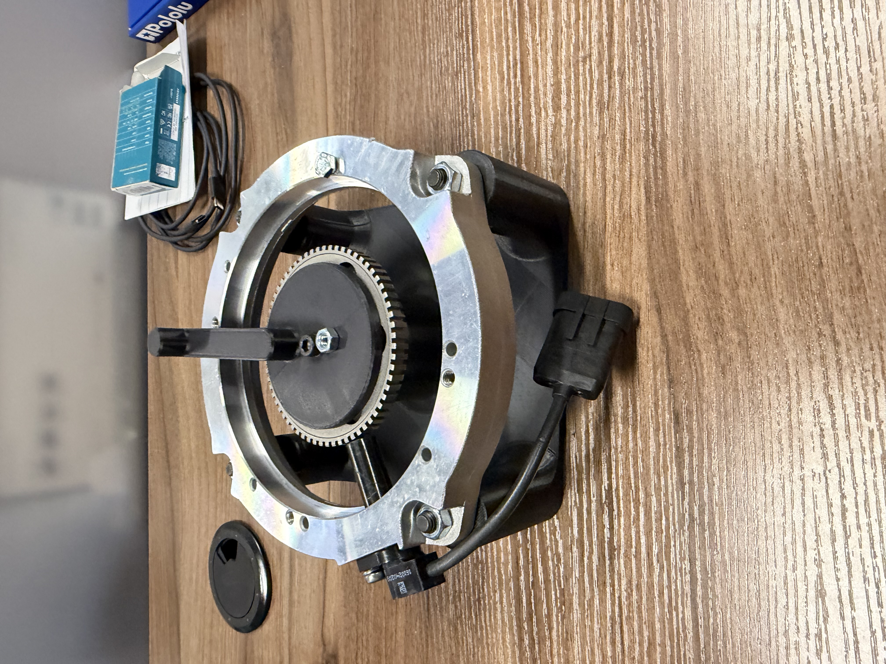

Automatic Parking Brake
Role: Lead Software Engineer | Organization: Yamaha Motor Manufacturing Corporation of America
Duration: June 2026 — Present (Proof of Concept)
Project Overview
Developed and tested a proof-of-concept automatic parking brake system capable of electronically actuating the vehicle's brake calipers. The system used an Arduino-based controller, Pololu motor-control hardware, sensors, and custom mechanical/electrical components to decide when to actuate the parking brake and command the actuator.
System Architecture
- Inputs: Motor speed sensor, TPS / throttle-position input
- Controller: Arduino, Pololu motor controller (C/C++)
- Outputs: Brake calipers via actuator
- Supporting hardware: Custom motor-control shield, bench-test harness
My Contributions
Control System Development
- Wrote control logic in C/C++ (Arduino IDE) with sensor polling and interrupt handling.
- Integrated motor-speed sensor and TPS/accelerometer inputs to decide when to apply parking brake.
- Implemented fault handling (e.g., overcurrent) and iterated through bench and vehicle testing.
Electrical Hardware
- Soldered and assembled a custom motor-control shield and integrated wiring harness for bench testing.
- Built the bench-test harness used for development and debugging.
Mechanical / CAD
- Designed brackets, mounts, and sensor mounts in Siemens NX and iterated with 3D-printed prototypes.
Testing & Results
Progressed from component-level bench testing to vehicle integration. The proof-of-concept successfully actuated the vehicle's brake calipers and validated the core control approach. Vehicle testing is ongoing; final production decisions are TBD.
Skills & Tools
C/C++, Arduino IDE, Pololu motor controllers, Siemens NX, 3D printing, soldering, bench and vehicle testing, embedded controls.
Gallery & Files

